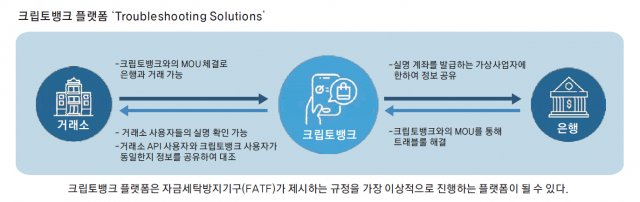

|
가상자산도 ‘토스’처럼 한 번에 관리… “크립토뱅크, 현금성 자산 실시간 교환” 2020. 05. 18 |
|---|
|
㈜두빛나래소프트(레아프로토콜) 박대용 창업자  가상자산이 실물경제에도 적용될 수 있을까. 두빛나래소프트의 QR코드를 접목한 핀테크 결제 시스템이 던진 화두다. 핀테크 스타트업인 두빛나래소프트가 개발한 PC, 모바일 솔루션인 ‘크립토뱅크’는 다양한 가상자산 거래소 자산을 하나의 플랫폼으로 통합했다는 점에서 가상자산계의 ‘토스’나 ‘뱅크샐러드’ 로 불린다.크립토뱅크는 여러 거래소에 흩어져 있는 가상자산을 쉽게 이체하거나 결제에 사용할 수 있도록 한 솔루션이다. 가상자산의 종류마다 다른 지갑주소를 매번 확인하지 않고 한 번 등록만으로 쉽게 가상자산을 주고받을 수 있도록 했다. 특히 크립토뱅크 플랫폼 안에 일반 소매점에서도 결제할 수 있는 기능을 갖춰서 가상자산 개발업체나 가상자산 거래소들의 관심을 받고 있다. 박대용 두빛나래소프트 대표는 “가상자산 업체 기술이 아무리 탁월해도 현실에서 적용이 불가능하면 한계가 있다”며 “실물경제 차원에서 유통 관계자와 규제 기관 등을 대상으로 설득하는 작업을 펼치는 게 더 큰 과제”라고 밝혔다. 진짜 변화를 이끌어내려면 가상자산 보유자들을 대상으로 복잡한 기술 설명에 매달릴 게 아니라 실사용이 되는 프로세스를 만드는 게 우선이라는 설명이다. 가상자산 시장이 안정적으로 성장하기 위해 발판을 놓겠다는 다짐도 밝혔다. 실물경제로 이어져야 진짜 성장 이뤄져 ―크립토뱅크는 어떤 기능을 가진 애플리케이션(앱)인가. “크립토뱅크는 여러 은행, 금융사 계좌를 통합한 ‘토스’의 가상자산 버전이다. 거래소에서 제공하는 API(Application Programming Interface) 키를 활용해 각 거래소가 제공하는 기능들을 하나의 플랫폼에서 사용할 수 있다. 한 거래소에서 다른 거래소로 비트코인을 이체할 때 거래소가 제공하는 앱을 거쳐야만 한다. 하지만 크립토뱅크 플랫폼에서 몇 번의 프로세스로 쉬운 이체가 가능해진다. 결제할 때는 결제를 지원하는 가상자산(BTC, ETH, XRP, XLM, USDT)을 크립토뱅크 커스터디(수탁) 계좌로 사용할 만큼만 예치하면 대원포스, 찬율, 페이크럭스 전국 가맹점에서 결제가 가능하다.” ―가상자산을 상품 구매에 실사용할 수 있게 하겠다는 시도는 지금까지 많았다. “가상자산을 쓴다고 해도 보통 온라인 채널이 대부분이었고 가상자산에 대한 가맹점 자체가 턱없이 부족했다. 오프라인 매장은 더 어려울 수밖에 없다. 일단 일반 유통 가맹점 포스(POS) 단말기로 암호화폐를 인식하는 게 사실상 불가능하다. 기기 시스템적으로 그렇다. 반면 우리는 QR코드를 이용해 중간 결제를 매개한다는 점에서 다르다. 최근 보급되는 듀얼 모니터 POS 단말기를 통해서 QR코드 결제가 이미 가능해졌다. 이렇게 변화된 환경을 이용하겠다는 것이다.” 크립토뱅크 사용자는 결제할 때 원하는 가상자산을 선택하고 POS에 뜬 QR코드를 인식하면 상품 가격만큼 가상자산이 결제시점의 시세대로 변환돼 수량을 차감하는 방식이다. 차감된 가상자산은 즉시 현 시세로 매도돼 현금성 자산으로 예치된다. 가맹점은 영업일 3일에 크립토뱅크가 지정한 정산업체(PG)를 통해 원화로 정산을 받는다. 이는 신용카드 결제 정산과 동일한 프로세스다. 거래처에서 가상자산 시세를 정산할 필요가 없는 구조라는 게 박 대표의 설명이다. ―많은 이들이 이미 카드나 현금으로 결제가 가능한데 굳이 가상자산으로 결제해야 할 필요가 있느냐고 묻는다. “국가별로만 봐도 결제 시스템에 대한 보급과 인식 상황 등이 각기 다르다. 우리는 신용카드 사용량이 높다고 하지만 중국을 비롯해 동남아 등에서는 핀테크에 대한 보급이 빨리 돼 QR코드를 사용한 거래가 이미 이뤄지고 있다. 국내에서는 신용카드만 쓰는 탓에 오히려 다양한 핀테크 기술 도입은 늦어지고 있다. 국내에서도 해외 관광객 매출 비중이 많은 업체들은 QR코드 등 핀테크 결제 수요를 잡을 필요성을 이미 느끼고 있다. 가상자산을 통한 핀테크 거래가 활성화될 경우 글로벌 시대에 결제 문턱은 더 낮아진다.” ―그래도 국내에선 QR코드 결제 방식이 생소하지 않나. QR코드 결제 방식에 대한 사람들의 반응은 어떤가. “제로페이나 카카오페이 등 QR코드 결제가 보급되면서 코드를 인식시키는 것만으로도 결제가 가능하다는 점을 많은 사람들이 알게 됐다. 중국 등 해외에선 이미 널리 보급된 방식인데 국내에서는 이제 알려지기 시작했다. QR코드를 인식하는 POS 단말기 등이 더 빠르게 보급되는 점도 사업에 긍정적이다. 여기에 최근 들어 부쩍 QR코드 결제의 굉장히 큰 장점이 두드러지고 있다. 바로 신종 코로나바이러스 감염증(코로나19)으로 인한 방역 장기화 시대에 ‘언택트’ 결제가 이뤄진다는 점이다. 신용카드나 스마트폰을 건네지 않고도 결제가 가능하다. 위생이라는 관점에서도 핀테크의 의미가 새롭게 조명되는 분위기다. 결제를 위해 건네는 스마트폰이나 신용카드가 타인의 손에 닿는 과정에서 위생 문제가 불거질 수 있다.” ―오프라인 시장에서 저변 확대를 핵심 목표로 삼는다는 게 특이하다. 보통 가상자산 가치를 띄우는 데 집중하지 않나. “그동안 가상자산 시장에서 그리던 장밋빛 미래는 현실과는 다소 거리가 있었다. 가상자산이 보안성을 핵심으로 삼아 현금을 대체할 것이란 전망이 많았지만 이를 쓸 수 있는 소비창구가 쉽게 열리진 않았다. 가상자산 열풍 초반엔 변동성이 지나치게 크다는 게 문제로 지적됐다. 이러한 한계를 넘어서기 위해선 핀테크 장치가 필요하다. 소비자가 현실에서 가상자산의 효용성을 느껴야 기술 확장에도 속도가 붙지 않을까. 본질적인 변화가 필요한 시점이라고 봤다.” 박 대표는 가상자산 그 자체를 통한 사업 보다는 기술을 통한 핀테크 결제 모델을 강조하고 나섰다. 대원포스, 찬율, 페이크럭스의 전국 가맹점을 대상으로 POS 기기 보급 등 저변을 넓히는 방향을 택한 점도 차별화 포인트다. 사용성에 중심을 둔 행보다. 가장 어려울 것으로 보였던 가맹점 확보가 이뤄지고 있다. 업체 입장에서도 기존 시스템을 이용하면 되기 때문이다. 하반기부터 적용 가능… 본격적인 사업 확장도 ―수익 모델을 어떻게 짜느냐가 관건이다. POS 단말기 수수료 등이 수익원인가. “더 큰 그림을 그리고 있다. 크립토뱅크를 기반으로 결제, 송금, 이체, 펀드, 기부 등 새로운 블록체인 금융을 만들어 내는 게 목표다. 금융 인프라는 국가마다 매우 복잡하고 폐쇄적인 게 특징이다. 그러나 가상자산을 활용하여 결제와 금융시스템을 구축한다면 기존의 금융프로세스의 폐쇄성을 벗어날 수 있다. 블록체인 분야에서 금융사로서 역할을 하고자 한다.” 두빛나래소프트는 지난해 말 유닥스 국제거래소, 중국 광차이그룹, 후오비 인도네시아 거래소, 블록글로벌 등과 함께 글로벌 가상자산 결제 사업을 위한 합작회사 ‘i5 글로벌 네트워크’를 설립했다. 가상자산 결제시스템의 성장 가능성을 높게 본 거래소와 투자사 등과 함께 본격적인 협력관계를 맺고 새로운 비즈니스 모델 발굴에 나선 것이다. 중국 국영기업인 광차이그룹이 특히 두빛나래소프트 기술에 관심을 보이면서 협력이 급물살을 탔다. 두빛나래소프트의 결제 모델을 글로벌 차원으로 확장한 점이 눈에 띈다. 또 두빛나래소프트는 레아프로토콜이라는 이름의 스핀오프 프로젝트도 함께 진행하고 있다. 크립토뱅크 결제 모델에 레아프로토콜의 토큰인 ‘레아’를 보유 수량에 따라 수수료를 차감해주는 모델이다. ―가상자산의 미래를 어떻게 보나. “결제와 금융 시스템에 있어서 복잡성을 크게 줄일 수 있다는 이점은 분명하다. 다만 가상자산의 미래는 사용성, 유동성, 담보성 등이 관건이다. ‘사용처가 명확하고 그로 인해 사용량이 증가하고 어디서든 담보가치가 제공되느냐’ 등의 조건을 충족하는 가상자산만이 살아남을 것이다. 현재로서는 비트코인이나 이더리움 정도만 그 역할을 하고 있다.” ―크립토뱅크의 미래는 어떻게 그리나. “점차 현금 없는 사회가 되어가고 있다. 모바일 하나만으로도 모든 결제가 이뤄지는 세상이 다가오고 있다. 지자체 페이나 지역화폐 등 디지털 화폐도 수요가 늘어난다. 이러한 기술적 진보에 따라 국경 없는 결제가 이뤄질 것이라는 전망도 커지고 있다. 변화 속에서 디지털 화폐까지 아우르는 통합 금융의 필요성은 높아질 것이다. 현재 기부에 있어서도 크립토뱅크는 월드비전과도 협업해 가상자산을 기부할 수 있는 모델 등도 개발 중이다. 결제부터 기부까지 가능한 디지털 플랫폼 모델로서 크립토뱅크를 키워 나갈 것이다. 국경을 뛰어넘는 플랫폼이 되고자 한다.” 한편 국제자금세탁방지 기구(FATF)가 가상자산 사업자(VASP)에게 규제사항으로 규정한 트래블룰에 대한 확산 논의가 이뤄지면서 크립토뱅크 서비스에 대한 관심은 더 높아지고 있다. 트래불룰은 가상자산 송수신 시 양측 정보를 모두 수집해야 하는 의무 규정이다. 은행에 비해 거래소를 비롯한 가상자산 사업자들은 아직 송수신에 대한 규정이 미비한 상태다. 크립토뱅크는 전 세계 가상자산거래소 및 가상자산지갑을 하나의 플랫폼에서 송금, 이체,결제, 수탁, 기부 등을 제공하고 있어 발신인과 수신인을 명확하게 확인할 수 있다. 거래소 API 사용자와 크립토뱅크 사용자가 동일한지 확인하는 기능도 갖췄다. 개별 거래소 차원에선 하기 어려운 영역이다. 크립토뱅크가 트래블룰에 대한 솔루션으로서도 주목받는 배경이다. |
| 출처 : 동아일보 (http://www.donga.com) |
| 기사 보러가기 → |
| 목록 |
Society for worldwide Exchange Payment and Transfer